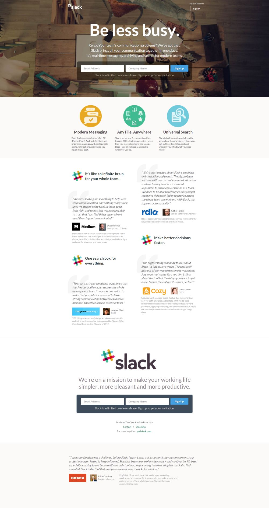
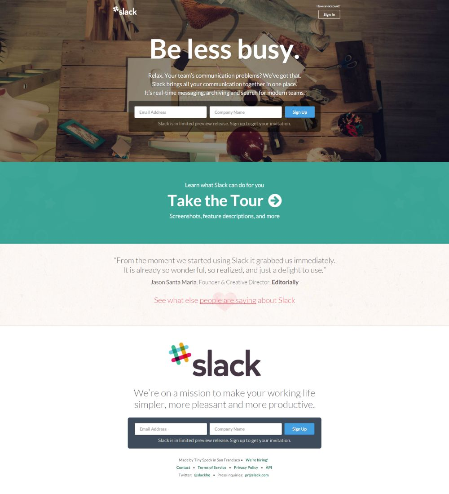
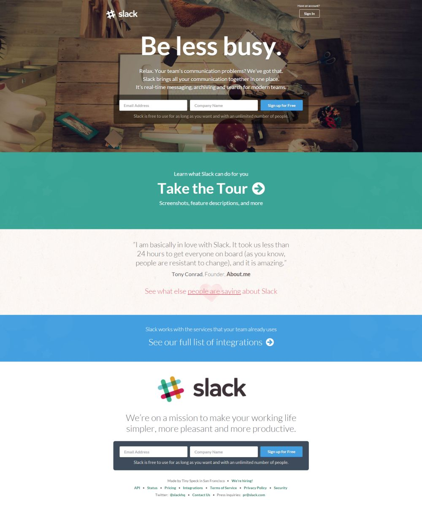
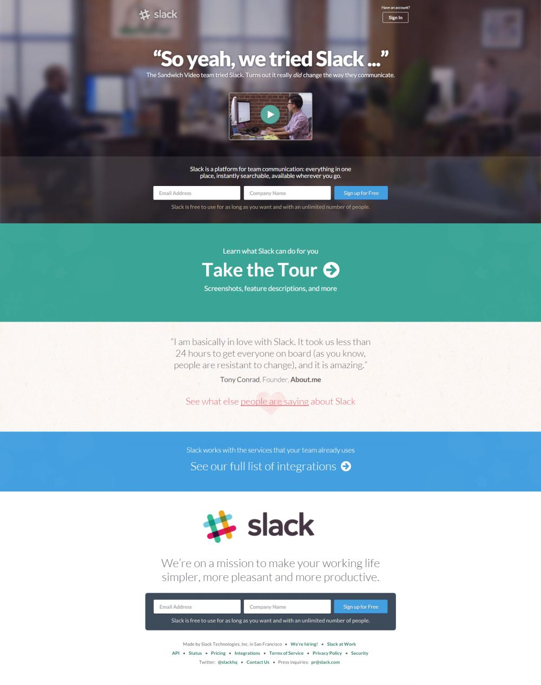
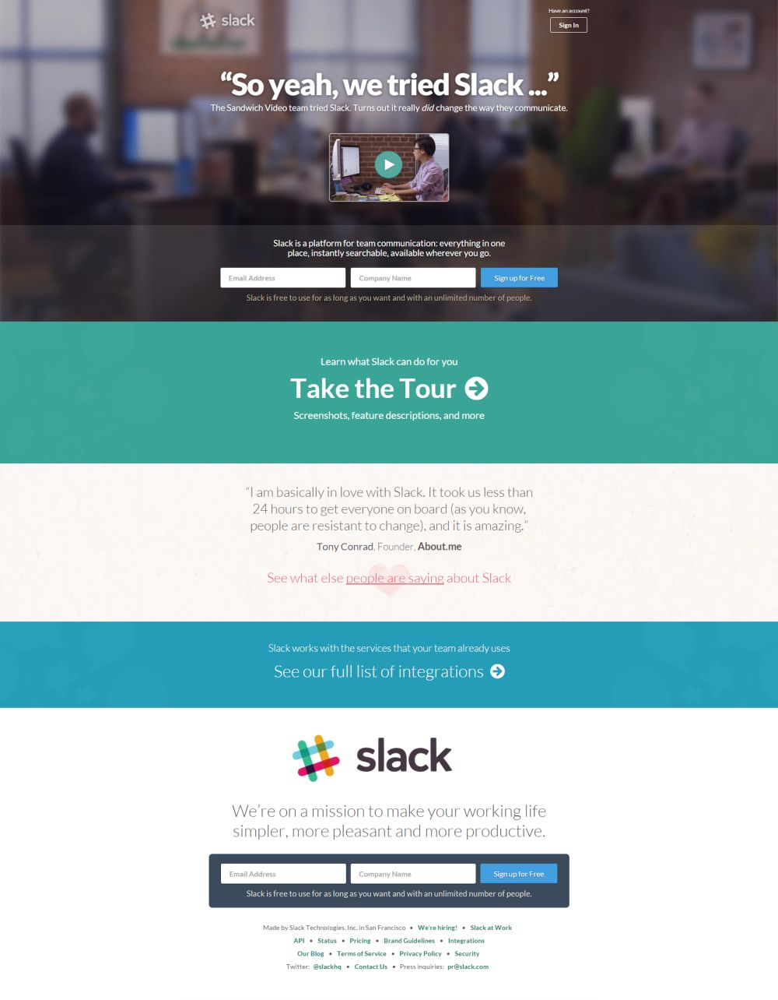

January, 2009 - $1.5 Million Seed Funding
April, 2010 - Raised $5 Million Series A
April, 2011 - Raised $10.7 Million Series B
Slack Startup Timeline Collection
November 2, 2013
"Slack: Be less busy"

December 30, 2013
"Slack: Be less busy"

2014
March 29, 2014
"Slack: Be less busy"

April - Raised $42.75 Million Series C
July 19, 2014
"Slack: Be less busy"

August 29, 2014
"Slack: Be less busy"

December 30, 2014
"Slack: Be less busy"
2015
April 25, 2015
"Slack: Be less busy"

Want to get notified of new Startup Timelines?